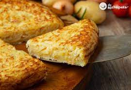

Tortilla de Patata

La tortilla española o tortilla española es un plato tradicional de España. Celebrado como plato nacional por los españoles,
es una parte esencial de la cocina española. Es una tortilla hecha con huevos y patatas, incluyendo opcionalmente cebolla.
Suele servirse a temperatura ambiente como tapa.
Ingredientes necesarios
- 4 huevos
- 1 cebolla
- aceite de oliva
- sal
Pasos para hacer una toritilla
- Cortar la cebolla y freirla oon aceite
- Batir los huevos
- Echar los huevos batidos en la sarten con la cebolla
- Esperar a que se haga la parte de abajo y darle la vuelta
- Esperar a que se haga la otra parte y terminar